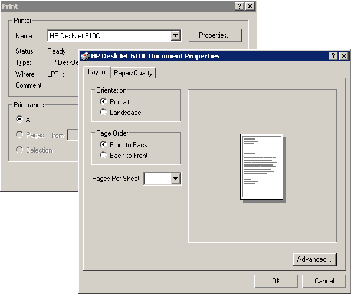

[prew] [next]
Print Circuit
To print designed circuit:
- click on Print button on tool bar.
- Print preview dialog window will appear as shown in Figure 12.
- Click on Print button to print layout.

Figure 13 Print preview window
To specify printer and paper options:
- Open Print window by clicking File-> Print Setup menu as shown on Figure 13.
- Select printer from opened dialog window and click on Properties button to specify paper size and location.

Figure 14 Print and Document Properties Windows.